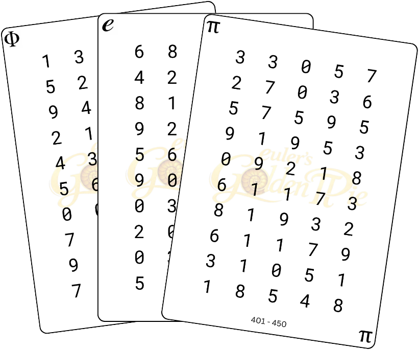
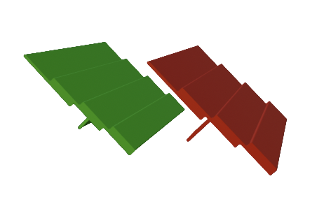

Beginner5 digits
09218
DONUT → CAT → CHOPSTICKS → CANDLE → SPIDER
A DONUT was balanced on a CAT's head. The cat tried eating it with CHOPSTICKS beside a CANDLE, until a SPIDER crawled out of the donut hole.
Story-Based Memory Game
Euler's Golden Pie turns random numbers into visual peg cards, creative stories, and memorable associations so players can recall longer digit sequences with confidence.

Example Sequence
6 3 0 5 7
SNOW covered a TRICYCLE near a STOP sign while CONTINENTS appeared on a map.
Story Gallery
Each example shows a random digit sequence, the peg-card idea behind it, and a story that makes the sequence easier to remember.
DONUT → CAT → CHOPSTICKS → CANDLE → SPIDER
A DONUT was balanced on a CAT's head. The cat tried eating it with CHOPSTICKS beside a CANDLE, until a SPIDER crawled out of the donut hole.
SNOW → PAUSE → WEEK → TRICYCLE
Since it was SNOWing outside, I PAUSEd my WEEKly movie and decided to ride my TRICYCLE.
SPIDER → CANDLE → CAT → TRICYCLE → CHOPSTICKS
A SPIDER climbed onto a CANDLE and nearly burned itself. Meanwhile, my CAT sat on my TRICYCLE and pushed my CHOPSTICKS away to steal my noodles.
40+3 • 55+2 • 22+7 • 88−4
We had a huge PARTY that lasted three hours. I was stopped by a POLICE car for going 2 MPH over. I bought a DOUBLE-DOUBLE coffee and added seven creamers. Then I saw BUTTERFLIES, but four flew away.
TRICYCLE → HALF-AN-HOUR → STOP → CONTINENTS → CHOPSTICKS → HOCKEY → SNOW → SKIPPING → UP → HIGH-FIVE → CAT → CANDLE → 50% DISCOUNT
Today, I was riding my TRICYCLE for HALF-AN-HOUR, when I had to STOP because people were crossing the road while talking about the CONTINENTS. Later, after noodles with CHOPSTICKS and a HOCKEY match, I saw SNOW falling and someone SKIPPING UP the stairs. At night, under CANDLE light, my CAT slept on a phone bought at a 50% DISCOUNT.
How It Works
Players do not simply repeat numbers. They transform the sequence into a chain of visual meaning.
Start with a random digit sequence from a digit card.
Convert digits into visual cards that are easier to imagine.
Connect peg cards using actions, causes, tools, and consequences.
Decode the story back into the original digit sequence.
Videos
Start with the intro video to learn the game and components. Then watch the full gameplay demonstration.
A short overview of the game explanation, components, common questions, and sample gameplay.
A full walkthrough showing the Encode, Build, and Recall Phases from start to finish.
Components
The game uses digit cards, peg cards, and peg stands to make memory visual, structured, and interactive.

Random digit sequences that players must encode and recall.

Visual association cards used to represent numbers and number groups.

A stand that organizes peg cards during the Encode and Build Phases.
Rules
The game is easy to begin, but the strategy grows as players learn better encoding techniques.
Each player selects a digit card from one of the digit decks.
Players use peg cards to represent the digits in the selected sequence.
Players connect the selected peg cards into a memorable story.
Players exchange digit cards for verification and take turns reciting their sequences.
The player who correctly recalls the greatest number of digits in the original sequence wins.
Strategies & Hacks
There is no single correct way to encode a sequence. Players can use anchor numbers, mental adjustments, and stronger story logic to reduce peg-card usage.
Two players may encode the same sequence in completely different ways and still arrive at the correct answer during recall.
Instead of encoding 46 as 4 and 6, a player may choose a 40 or 44 peg card and mentally remember the remaining difference.
Peg cards such as 33, 44, 55, 66, 77, 88, 99, and 100 can serve as memorable anchor points.
Stories are stronger when objects interact. Make one object cause an action that affects another object.
FAQ
Euler's Golden Pie is a memory game and learning system designed to make memorizing long number sequences faster, easier, and more enjoyable.
Euler's Golden Pie combines memory training, creativity, and friendly competition. Players do not simply memorize digits—they transform them into stories, images, and meaningful connections.
The youngest person between the two players goes first.
The goal is to memorize and recall increasingly longer digit sequences by converting numbers into memorable images and stories.
If two or more players correctly recall the same number of digits, the tied players continue to the next digit sequence length.
Players may keep their cards visible. The challenge is not remembering the cards themselves, but using them to create effective stories.